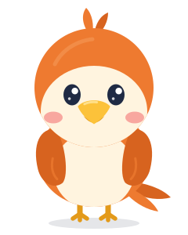
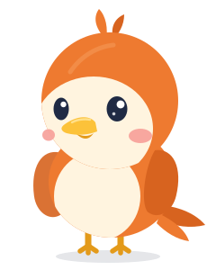
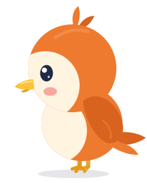
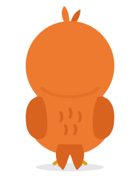
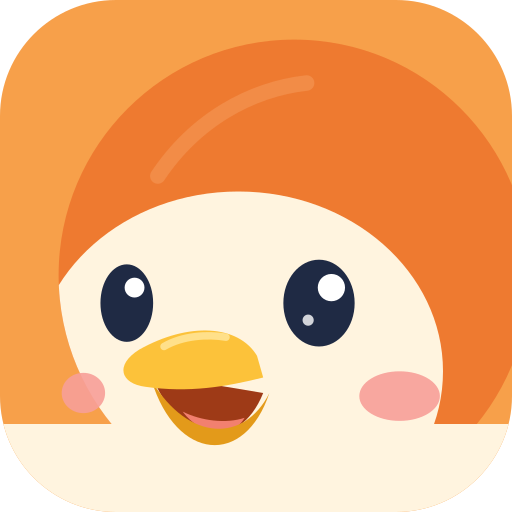
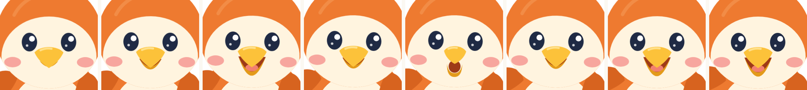

Idle / listening听你说Idle / listening听你说
Idle / listening听你说Idle / listening听你说 Talking讲解
Talking讲解 Your turn · hands the mic递麦 · 轮到你了
Your turn · hands the mic递麦 · 轮到你了 Thinking想一想
Thinking想一想 Celebrating太棒了
Celebrating太棒了Flat vector, no outlines. Head ≈ 1 head-height, body ≈ 1.1, legs short. Proportions are locked to a 240×300 grid; all poses share the same parts.

Front
3/4 (icon angle)
Side
Back
Head icon (vector)replaces teeko_icon.pngIdle / listening听你说Talking讲解Your turn · hands the mic递麦 · 轮到你了Thinking想一想Celebrating太棒了
closed → small → wide → small → oo → small → wide → wide … · head bob 720ms · blink 3.6s